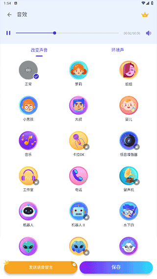

Voicechanger 快问快答：录音变声一把梭，群聊整蛊从此有新玩法
整理了关于 Voicechanger 的九个高频问题，从它到底是什么、怎么装、核心功能怎么用，到常见坑和同类对比，一次性说清楚。
整理一篇关于 Voicechanger 的快问快答。这款录音变声工具在安卓圈里已经转了一阵了，但很多人还是搞不清楚它能干什么、不能干什么、怎么用才不出坑。以下九个问题，覆盖从入门到进阶的常见疑问。
Voicechanger 到底是什么？和那些通话变声 App 有什么区别？
一句话：它是录音变声工具，不是通话中间件。你录一段自己的声音，给这段干声套上声线、叠上环境音、拧几个旋钮，就能得到一段完全不同的声音——萝莉、大叔、机器人、外星人、幽灵，三十多种预设点哪个变哪个。
关键区别在于"先录后变"vs"实时拦截"。那些号称能在打电话、游戏语音里实时变声的 App，大多靠悬浮窗外放法蒙混过关（后面会细说这个方案的坑），而如果你去Voicechanger官网看一下，它的定位写得很清楚：音频文件处理。产物可以反复修改、保存到本地、分享给任何应用，但确实不能在通话过程中直接拦截你的声音。
谁需要它？典型的使用场景有哪些？
三类人用得最多。第一类是群聊整蛊党，换个大叔声线往朋友群里一发，猜声音本身就是个游戏，社交效果立竿见影。第二类是短视频创作者，旁白变声后导入剪辑软件对轨，系列内容固定一套声线，音色前后一致，省得每集都压着嗓子装。第三类是游戏素材配音，机器人、僵尸、外星人这些角色音，给录好的素材加一层就成成品了，不用自己费劲捏着嗓子学。
还有一类比较随性的用法：折腾铃声。变声作品直接设成来电铃声或闹钟——早上叫醒你的是外星人还是萝莉，全看你前一天晚上调了哪条声线。
怎么装？安卓以外的平台能用吗？
目前只有安卓版本，PC 和 iOS 都没有。安装包从官方下载渠道拿就行，APK 直接装，不需要特殊权限（录音权限肯定要给，存储权限用来保存变声后的音频）。
iOS 平台上类似需求的解决空间更小，系统权限管得更死，基本没有能正常工作的方案。PC 上倒是有 MorphVOX、Voicemod 这类专业级变声软件，但那些是给主播和游戏玩家做实时变声的，跟 Voicechanger 的定位不一样。
三十多种预设声线够用吗？分类是怎么分的？够不够整出自己的特色？
预设按四个分组组织：性别与年龄（整蛊向，萝莉、大叔、大妈这种）、科幻与恐怖（氛围向，机器人、幽灵、外星人）、动物与搞怪（搞笑向，猫叫、猪叫、鸭子）、基础与器材（调音向，电话声、无线电声、电音）。
预设只是起点。真正能调出差异化的是下面那五个手动调参：音调、清晰度、音量、回音、变音强度。预设选个大概方向，然后拧旋钮往你想要的感觉收——比如萝莉声线默认偏甜，你把变音强度往左拧一点，就从"夹子音"变成"装嫩"的感觉；把清晰度往左收一点，又变成"感冒了还硬要卖萌"的效果。五参数组合出来的可能性远不止三十多种。

核心操作流程是怎样的？第一次打开该怎么上手？
流程就三步：录音 → 选声线 → 调参导出。
录音可以现录也可以导入本地 mp3/wav/m4a。选声线就是从四组预设里点一个，立刻能试听。调参是重点，推荐顺序：先选声线和环境音 → 调变音强度（最常用的旋钮，控制声线效果有多"重"）→ 音调（想高八度还是低八度）→ 清晰度（想干净还是朦胧）→ 回音（要不要空间感）→ 音量（最后收尾，把整体放大或缩小）。
导出的时候，音频可以保存到手机本地或直接分享微信、QQ、抖音。视频的话建议拍完立刻确定用什么声线——因为即拍即变的视频原始干声一般不会保留，拍了就定了，后期想换声线得重拍。
环境音叠加是怎么回事？哪些场景值得叠？
环境音是额外的一层音效——洞穴回音、雨天、嘈杂街面、火车车厢之类的，可叠可不叠，加错了点一下就取消，不影响原来的声线。
什么时候该叠？想做氛围感的时候。比如给机器人声线叠个"无线电"环境音，立刻就有信号干扰那味儿；给幽灵声线叠个"洞穴回音"，空灵度翻倍；给萝莉声线叠"雨天"，瞬间变成"下雨天和萝莉更配"的画面感。什么时候别叠？群聊整蛊的时候别搞太复杂——环境音太重反而让人听不清你在说什么，大叔声线配个干净的空旷感就够了。
想用悬浮窗在游戏或微信语音里实时变声，有戏吗？
坦白说，安卓平台目前没有真正的通话中间件级别的变声方案，iOS 上也差不多。这是操作系统权限设计决定的——普通应用不能在系统通话或游戏语音的音频通道里插一层实时处理。
现在网上流传的"悬浮窗外放法"本质是个绕路方案：Voicechanger 扬声器出声音 → 游戏或微信的麦克风把扬声器声音录进去。能用，但坑不少：必须外放不能戴耳机（戴了声音传不出来麦克风录不到），外放会有回音和啸叫（扬声器声音被同机麦克风二次录进去），还会把周围的风扇声、脚步声、远处电视声一股脑录进去。
能改善的折中方案是接外置蓝牙音箱——音箱离手机 30-50cm 左右，方向对着手机麦克风，音量别开太大。回音会大幅减少，环境噪音的影响也小。缺点是蓝牙延迟比扬声器直接播放略高，但大部分游戏场景影响不大。
调参有什么常见坑？为什么我调出来的声音要么爆音要么模糊？
两个最常见的调反了的旋钮：清晰度和音量。
很多人上来先拧音量——声音小了就开大，开大了爆音又往回调，来回折腾。正确顺序是——我后来翻了一下Voicechanger文档才确认这个顺序：先把声线、环境音、变音强度、音调、清晰度、回音都调好，音量是最后一个才动的旋钮。因为清晰度控制的是高频细节和干净程度，音量是把调好的东西整体放大或缩小——先调音量再调清晰度，调完清晰度之后音量肯定又不够了，还得再拧回来。
清晰度往左还是往右？听不清队友说话就往右推（高频增强，声音明亮），变声太刺耳像金属声就往左收（高频衰减，声音发闷），恐怖场景想朦胧感也往左收。
爆音怎么办？不是"音量调得不够"，是信号强度超过了处理上限。往回收一档音量 → 收一点清晰度 → 还爆就收一点变音强度，三步总能搞定。
和同类 App 比，Voicechanger 的优势和短板分别是什么？
优势集中在三点。第一，录音变声一体化——同一段干声可以无限换声线、无限试环境音，随时重调随时试听，不像很多同类 App 只能先录好、录完了才能套效果。第二，预设覆盖够广——三十多种声线加上环境音叠加，基本覆盖整蛊、配音、氛围营造三大场景。第三，参数可调——五个旋钮不是摆设，真能调出差异化，预设不满意就拧旋钮往回收。
短板也明显。只有安卓，iOS 和 PC 用户用不了。没有 AI 声纹克隆——不能模仿某个真人的声音，这点比 MorphVOX 这类专业软件弱。即拍即变的视频不能后期换声线——原始干声烧进去了就没了，不确定用什么声线建议先用音频录音试完再开拍。
如果你的需求是"录一段有趣的声音发群里"或"给短视频加个固定声线的旁白"，Voicechanger 足够好用。如果你要的是"直播实时变声"或"模仿某位声优的声音"，得找 PC 上的专业方案。
最后一句
想要一款在安卓手机上"录下来就能变、变完就能分享"的变声工具，Voicechanger 是目前同类里完成度比较高的选择，但别指望它能解决通话实时变声——那是操作系统层面的限制，不是单个 App 能绕过去的。
这套 Voicechanger 的资料在三个仓库都能拿到——GitHub 上保持了最新版本、Gitee 国内访问更快、GitCode 作为额外备份留着，按需选就行。